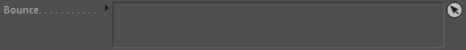
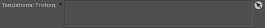

Collision
No Collision Response
Don't calculate collision responses with other rigid-bodies.
Margin [m]
A little collision offset from obstacle surfaces.
Bounce
Bounce of the rigid body when colliding with another rigid body. Higher values means more bounce.
Translational Friction
Friction of the rigid body movement on obstacle surfaces during collision. Higher values mean more drag.
Rotational Friction
Friction of rigid body rotations on obstacle surfaces during collision. Higher values mean more drag.
Contact Sampling
Any rigid-body collisions can be stored for later use by other nodes. This defines when these collision contact samples are stored.
1. First Contact only - Only the first contact is stored. If the node keeps on sliding these collisions won't be stored.
2. All contacts - all collisions are stored. This can be slower.
Collision::Constraints
Bounce

These constraints control the Bounce value.
Tanslational Friction

These constraints control the Translational Friction value.
Rotational Friction
These constraints control the Rotational Friction value.